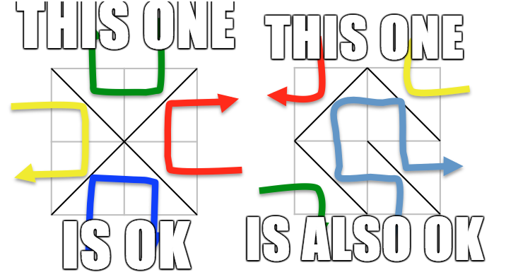
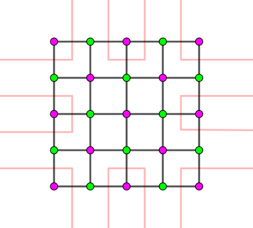
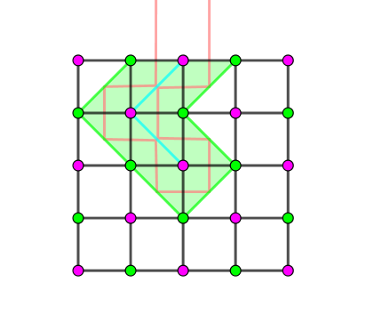

有一个装满镜子的盒子，盒子可以看成一个 $n \times m$ 的网格，每个格子中有一个镜子，镜子的朝向形如 / 或 \ (与网格线成 $45^\circ$ 角)。但是有些镜子被摧毁了，你需要在这些格子中 (按照上述规则) 重新安放镜子，并满足如下两个条件：
从网格最外圈的某一条边 (的中点) 处垂直入射的光，将会从这一条边的邻边垂直射出。
所有 $n + m$ 条光线的并集 "穿透" 网格中所有 ($2 n m - n - m$ 条) 内部的边。
举个例子，下列两张图的镜子摆放方案都满足上面两个条件：
你需要求出，一共有多少种对空格子摆放镜子的方案，使之满足上面两个条件，由于答案可能很大，请将答案对给定素数 $MOD$ 取模。
第一行包含三个正整数 $n, m, MOD$ ($1 \leq n, m \leq 100; 3 \leq MOD \leq 10^9 + 7$，$MOD$ 是是素数)，分别表示网格的行数、列数以及对答案的模数。
接下来的 $n$ 行，每行包含一个长度为 $m$ 的字符串，由 /, \, * 三种字符组成。其中，/, \ 表示已知镜子的朝向，* 表示一个被摧毁的格子 (即空格子)。
保证 * 的数量不超过 $200$。
输出一行一个整数，表示方案数对 $MOD$ 取模的结果。
我们将镜子看成边，网格线的交点看成顶点，于是我们就得到了一个共有 $n m$ 个顶点的网格图，它显然是一个二分图。
我们考虑这 $n + m$ 条光线，可知，它共有两种不同的配对方案 —— 比如我们固定一条边 $e$，如果 $e$ 与它 "逆时针方向的邻边" 配对，那么，由条件 1，其余边的方向的配对情况均确定；如果 $e$ 与它 "顺时针方向的邻边" 配对，结论也是类似的。
因此，我们只需要讨论清楚，对于一种固定的配对方案，摆放镜子的方案个数，或者，更基本地，一个合法的摆放方案需要满足的充要条件。
不妨假设这些光线的配对情况如下图 ($n = m = 4$)：
(ps: 上图指表示光线之间的配对情况，而不是真正的光线)
任取一条光线 (如下图)，考虑它所经过的所有格子的最外面的一层 (包络)。由于每个格子上都需要有一面镜子，于是它经过的所有 "半格" 是所有 $2 n m$ 个半格的一个子连通区域，从而包络上的所有镜子构成一个起始于绿点，终止于绿点的链，如下图所示：
由于所有光线经过的 "子连通区域" 的并集恰好是 $2 n m$ 个半格，因此，这些绿镜子 (连接两个绿色点之间的镜子) 就恰好是将整个网格进行了 "划分"，从而它必须是连通的 (否则会存在一个区域有多于两个出口)。
同时，由于并集恰好是 $2 n m$ 个半格，从而绿镜子也不能形成圈，否则圈内的格子是无法射入光线的。
终上，绿色镜子应恰好构成一棵树 (树是无圈的无向连通图)。
而考虑剩下的青色镜子 (连接两个粉色点之间的镜子)，它们的配对方法是唯一的 —— 只需要对每个未摆放镜子的格子，连一条边即可。容易证明这样连边也不会成环，否则这个环会包含绿色点，与绿色点连通矛盾。
于是，每一种合法的方案唯一对应着一种绿色点的生成树。
当然这只是光线配对情况如上图的情况。当然，光线的配对还可以有另一种情况，此时，一种合法的方案就对应一种粉色点的生成树。
于是我们只需要统计这两组点的生成树的个数就可以啦。
那么对于有些边给定的情形，其实也不麻烦。我们先将这些边用并查集 (或 dfs/bfs) 缩起来，然后对于新图的两个连通块 $C_1, C_2$，连接一条边权为 $e \left( C_1, C_2 \right)$ 的边，其中 $e \left( C_1, C_2 \right)$ 为一个端点在 $C_1$ 中，一个端点在 $C_2$ 中的边的个数。
最后只需要使用 Kirchhoff's Matrix-Tree 定理，就可以统计出生成树的个数了。
总时间复杂度 $O \left( n m + K^3 \right)$，其中 $K$ 表示 * 的个数 (不过要注意实际矩阵大小的上界是 $401$，因此 $K^3$ 前面相对原来的 Gauss 消元会有 $8$ 倍的常数)。
(ps: 以下内容为 2020.1.13 更新)
事实上，我们需要注意要先判断题目中给的所有镜子之间是否形成圈，如果形成了圈，则由前面推理的结论知此时问题无解。
有没有解倒问题不大，关键是如果形成了圈的话，整个图的连通块个数可以达到 $O \left( n m \right)$ 级别。(大家可以想象一下「只连绿色点」这种构造)，从而导致无法进行 Gauss 消元。而这个判断的具体过程可以使用并查集或其它方法解决。
而只有当判完无圈后，此时每一条边会使整张图减少一个连通块，从而容易证明最终图的连通块总数恰为 $n + m + K + 1$。
#include <bits/stdc++.h>
typedef long long ll;
typedef std::pair <int, int> pr;
const int N = 108, M = 666, N2 = N * N;
int mod;
int n, R, C, V[2], E = 0;
int p[N2], bel[N2];
int G[2][M][M];
bool type[N2];
char buf_[N];
pr fe[N2 * 2];
inline int ID(int r, int c) {return r * (C + 1) + c;}
int ancestor(int x) {return p[x] == x ? x : (p[x] = ancestor(p[x]));}
inline bool Union(int x, int y) {
if ((x = ancestor(x)) == (y = ancestor(y))) return true;
return p[x] = y, false;
}
ll PowerMod(ll a, int n, ll c = 1) {for (; n; n >>= 1, a = a * a % mod) if (n & 1) c = c * a % mod; return c;}
inline void link(int (*mat)[M], int u, int v) {++mat[u][u], --mat[u][v], --mat[v][u], ++mat[v][v];}
int gauss(int n, int (*mat)[M]) {
int i, j, k, det = 1; ll coe;
static int *m[M];
for (i = 0; i < n; ++i) m[i] = mat[i];
for (i = 0; i < n; ++i) {
for (j = i; j < n && !m[j][i]; ++j);
if (j == n) return 0;
if (i != j) det = mod - det, std::swap(m[i], m[j]);
det = (ll)det * m[i][i] % mod;
coe = PowerMod(m[i][i], mod - 2);
for (j = 0; j < n; ++j) m[i][j] = m[i][j] * coe % mod;
for (k = i + 1; k < n; ++k)
for (coe = mod - m[k][i], j = i; j < n; ++j) m[k][j] = (m[k][j] + coe * m[i][j]) % mod;
}
return det;
}
int main() {
int i, j, u, v, ans; bool o;
scanf("%d%d%d", &R, &C, &mod), n = (R + 1) * (C + 1);
std::iota(p, p + n, 0);
for (i = 0; i < R; ++i)
for (scanf("%s", buf_), j = 0; j < C; ++j)
switch (buf_[j]) {
case 42: fe[E++] = pr(ID(i, j + 1), ID(i + 1, j)), fe[E++] = pr(ID(i, j), ID(i + 1, j + 1)); break;
case 47: if (Union(ID(i, j + 1), ID(i + 1, j))) return putchar(48), putchar(10), 0; break;
case 92: if (Union(ID(i, j), ID(i + 1, j + 1))) return putchar(48), putchar(10), 0; break;
}
for (i = 0; i <= R; ++i)
for (j = 0; j <= C; ++j) type[ID(i, j)] = (i ^ j) & 1;
for (i = 0; i < n; ++i) if (p[i] == i) bel[i] = V[type[i]]++;
for (i = 0; i < n; ++i) bel[i] = bel[ancestor(i)];
for (i = 0; i < E; ++i) std::tie(u, v) = fe[i], o = type[u], link(G[o], bel[u], bel[v]);
ans = (gauss(V[0] - 1, G[0]) + gauss(V[1] - 1, G[1])) % mod;
printf("%d\n", ans + (ans >> 31 & mod));
return 0;
}
坑1：注意矩阵大小是 $400$ 左右，数组不要开小了。
坑2：缩点时注意点的类型 (实质是二分图的 $2-$染色)，需要对每种颜色分别统计出生成树个数，再加起来。
坑3：不要忘记判断原图中是否有圈哦！